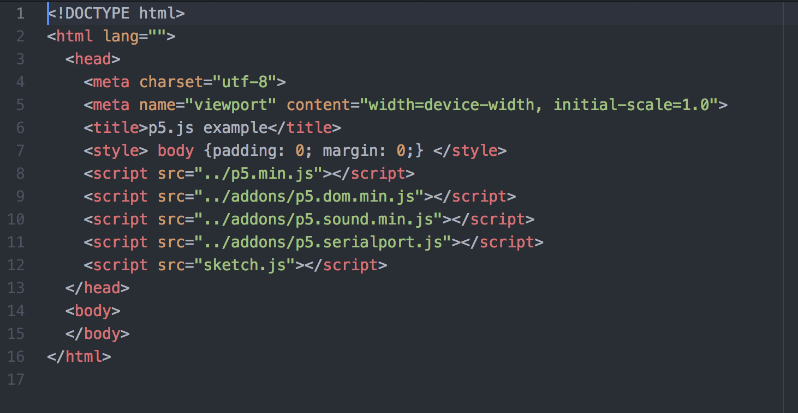

For the resistor with the photoresistor and thermo sensor,
5V / 0.02A = 250Ω
So any resistors larger than 250Ω can be used. Here I use 10k.
The sensor reads from 448 to 867 out of 1023
so the voltage of the photoresistor/thermo sensor ranges from 5*448/1023 = 2.19V,
to 5*867/1023 = 4.24V
For the resistor that connects with the transistor:
The ideal current that flows through the microcontroller is 0.02A,
To protect it, 12V / 0.02A = 600Ω, which means 600Ω can protect the circuit in any case with
or without the voltage drop.
Here I use 10k just to be safe.
Schematic - a light sensor, thermo sensor, and a motor with transistor
Circuit

Arduino Code

js

html

Operation -- the height changes when I change the lighting around the light sensor. the color becomes deeper when I touch the thermo sensor. I hit "o" to turn on the motor and hit another key to turn it off